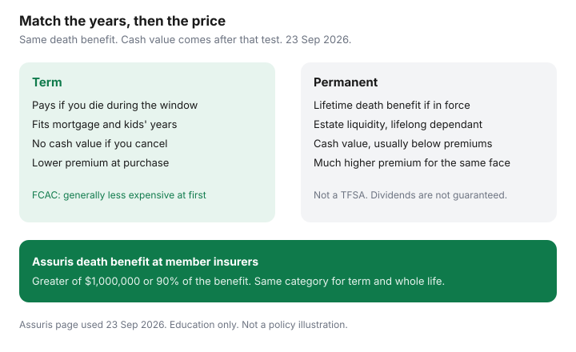

Insurance · Canada
Term vs Whole Life Insurance in Canada: A Household Decision Framework (Not a Sales Pitch)
Permanent life insurance is a lifetime contract that usually builds cash value. Term life insurance pays if you die during a set window and then ends. Canadian households get sold the first when they needed the second, because the illustration shows a savings story and the premium quote for term looks “cheap” only until someone calls it incomplete. FCAC’s framing is the right starting point: term premiums are generally lower when you first buy; permanent coverage lasts for life and usually has cash value if you cancel — and that cash value is less than the premiums you paid for the insurance cost.
This is a decision framework for a mortgage, kids’ years, and an income-replacement window. It is not a product recommendation, not a tax opinion, and not a reason to buy a policy from whoever drew the chart. Match the contract to the years the household is actually exposed.
Disclosure: Term life quote portals are an offer type. Saving Optimizer may earn a commission if we later add partner links. We do not currently claim insurer or advisor partnerships. We do not sell policies. Education only, not insurance, tax, or investment advice. Assuris figures were read 23 Sep 2026.
Key takeaways
- Buy term to match a temporary need: the mortgage, the years children depend on your income, the years until the survivor can carry the household.
- Compare the same death benefit over the same horizon. Ignore cash-value marketing until that price gap is on paper.
- Permanent coverage has a job when the need does not end: estate liquidity, a lifelong dependant, a charitable bequest you have already decided to fund with insurance.
- Do not use whole life as a TFSA substitute if registered room is still unused. The premium difference is real money.
- A conversion privilege lets you move to permanent later without new medical evidence. The new premium is priced at the age you convert. Read the deadline.
- Assuris protects death benefits at member insurers up to the greater of $1,000,000 or 90%. That is not a reason to overbuy permanent insurance.
Match coverage to temporary needs: mortgage, kids’ years, income replacement window
FCAC describes term as coverage for a fixed period, such as 10 or 20 years, or to a set age. If you die in that window, beneficiaries are paid. If you outlive it and do not renew or convert, they are not. That shape fits debts and dependent years, which also end.
| Need | When it ends | Contract shape that fits |
|---|---|---|
| Mortgage | Amortization left, often 15–25 years | Personal term you own, with a beneficiary you name. Not creditor insurance that shrinks and pays the lender. See the needs framework. |
| Kids’ years | Until the youngest is independent — a household choice, not a statute | Term to that horizon. A 10-year term that expires while a child is 12 is the wrong window even if the premium looks low today. |
| Income replacement | Years the survivor cannot replace your paycheque | Term for those years. Group life from work counts only while you hold the job. Do not treat one times salary as the plan. |
| Final expenses only | Does not expire | A small permanent policy can fit. It does not need to be large enough to replace twenty years of income. |
Renewable term can extend, and FCAC notes premiums may rise at renewal — sharply, because you are older. A level premium for the full window you care about is usually the cleaner buy if you already know the window. If your health may not qualify later, a longer level term or a conversion option matters more than the lowest 10-year price.

Cost comparison method: same death benefit, same term horizon, ignore cash-value marketing
Ask for two premiums on the same death benefit — the amount from your needs worksheet — and write what each contract does if you die in year 10 and if you are alive in year 20. Do not compare a $500,000 term quote with a $150,000 whole-life quote and call whole life “not much more.”
| Question | Term | Permanent (whole life) |
|---|---|---|
| Death benefit during the need | Level, if you bought level term | Level, if you bought a level whole-life face amount |
| If you die after the term | Zero, unless renewed or converted | Still in force if premiums are paid |
| If you cancel | No cash value (FCAC) | Cash value, typically less than premiums paid for the insurance cost (FCAC) |
| How to compare cost | Monthly premium difference times 12 times the years of the temporary need. That difference is the price of “permanent.” Ask for guaranteed cash value at the end of those years. Do not assume it exceeds the difference. | |
A labelled sketch for a household that needs $500,000 for 20 years: if term is $45 a month and whole life is $380 a month, the extra is $335 a month, or $80,400 over 20 years, before any dividend. Those premiums are not a market quote. They exist so you can see the method. Put your illustration’s guaranteed cash value beside the extra premiums. If the cash value is a fraction of the extra you paid, you bought an investment story, not a better death benefit for the years you needed one.
When permanent coverage has a real use case (estate liquidity, lifelong dependents)
Permanent insurance earns its premium when the payout is supposed to happen whenever you die, not only if you die before a date.
- Lifelong dependant. A child or sibling who will need support after you are gone, with no end date tied to a graduation.
- Estate liquidity. A cottage, a private company share, or tax on death that you intend to fund with insurance so heirs are not forced to sell. The tax rules are specific. This page is not a tax plan — a CPA or tax lawyer prices the liability; the insurance only funds a number they gave you.
- A bequest you have already chosen to insure. A charity or an heir, sized on purpose, not sized to match a sales illustration.
- Final expenses when you want a small paid-up amount and you can afford it without crowding out the term that covers income.
If none of those are true, a permanent policy large enough to replace income is usually the expensive answer to a temporary question. You can own a small permanent policy and a larger term policy at the same time. The mix should follow the needs, not the commissionable product list.
Avoid blending investing and insurance unless you already max TFSA/RRSP efficiently
Cash value inside a permanent policy is tax-sheltered under rules that are not the TFSA rules and not the RRSP rules. FCAC’s point still holds: if you cancel, the cash you get back is generally less than what you paid in premiums for the cost of insurance. Using whole life because “it is like a savings account” skips two simpler tools most middle-aged households have not filled: TFSA room and, where the deduction fits, RRSP room. Contribution limits and which account comes first are covered in the Personal Finance guides. This page will not pick a fund or a return.
A practical order:
- Buy enough term death benefit to cover the temporary needs worksheet, if you qualify and can pay the premium without revolving debt.
- Keep an emergency fund so you do not lapse that term when a month goes badly.
- Use TFSA and RRSP room on purpose. Employer match comes before optional insurance extras.
- Only then consider permanent insurance for a need that is actually permanent — and only with an illustration that shows guaranteed values, not a rosy dividend scale alone.
Participating whole life dividends are not guaranteed. If the illustration has a “current dividend” column and a “guaranteed” column, plan with the guaranteed column. Universal life with a side investment account is a different product with different costs. Do not let the word “permanent” collapse them into one decision.
Conversion privileges on term policies: what they cost and when they matter
Many Canadian term contracts let you convert some or all of the death benefit to a permanent policy without new medical evidence, before a deadline printed in the contract. The deadline is often an age or a number of years. It is not a federal rule. If the privilege matters to you, get the date in writing when you buy.
What it costs: the new permanent premium is priced at the age and product you convert into, not at the term premium you have been paying. Converting $500,000 at 62 is a different cheque from converting $100,000 at 52. You can often convert part of the face amount and keep or drop the rest. Ask which permanent products are on the conversion list — the list can be narrower than the insurer’s full shelf.
Conversion matters if your health has changed and you still have a permanent need, or if you want the option and can pay for a longer term that includes it. It is a poor reason to buy a 10-year term that expires before your youngest child is grown, hoping you will feel like converting later. Put the conversion date on the annual review calendar 18 months ahead, not the month it dies.
Assuris protection basics so product choice is not driven by insurer-failure fear
Assuris protects policyholders if a member life and health insurer fails. You do not buy a separate Assuris policy. On the page used 23 Sep 2026, death-benefit protection is the greater of $1,000,000 or 90% of the benefit. Assuris’s own term example: a $750,000 death benefit is kept in full because it is under $1,000,000; a $1,500,000 benefit is kept at 90%, or $1,350,000. Cash value is protected at the greater of $100,000 or 90%. Health expenses, which can include travel medical issued by a member, are the greater of $250,000 or 90%. Monthly income is the greater of $5,000 a month or 90%.
Protection applies to policies issued in Canada by member companies, and you should keep paying premiums if a failure is underway so the contract stays active. It applies separately by policy at that member. It is not a reason to split coverage across five insurers out of fear, and it is not a reason to prefer whole life over term. Term and whole life death benefits sit in the same Assuris death-benefit category. Choose the product that matches the need. Confirm the insurer is a member on Assuris’s site when you apply.
Higher Assuris limits were announced at the 25 May 2023 annual meeting and are what the public “How am I protected” page described when we drafted this guide. Re-check that page if you are buying a face amount above $1,000,000.
Sources & date stamps
- FCAC, Life insurance — term versus permanent, cash value, renewal premiums (used 23 Sep 2026).
- FCAC, optional mortgage insurance products — creditor mortgage life versus personal life insurance (used 23 Sep 2026).
- Assuris, How am I protected and the term-life example — death benefit greater of $1,000,000 or 90%; higher limits announced 25 May 2023 (used 23 Sep 2026).
Frequently asked questions
Is term or whole life better for a Canadian family?
Term fits a need that ends: the mortgage, the years children depend on income, a set window of income replacement. Whole life fits a need that does not end, such as a lifelong dependant or estate liquidity you have already sized. FCAC notes term is generally less expensive when you first buy.
How do we compare the cost without a sales illustration?
Ask for the same death benefit. Multiply the monthly premium gap by 12 and by the years of the temporary need. Set that extra premium beside the guaranteed cash value, not a dividend projection. Cash value if you cancel is generally less than the premiums paid toward the insurance cost.
Should we buy whole life instead of using a TFSA?
Not while unused TFSA or appropriate RRSP room is the simpler savings tool. Permanent insurance is not a TFSA. Buy the term death benefit you need first. This is education, not a tax or investment recommendation.
What does Assuris cover if an insurer fails?
On the Assuris page used 23 September 2026, a death benefit at a member insurer is protected for the greater of $1,000,000 or 90 percent. Term and whole life sit in that same category. Confirm the company is a member. Do not choose a product because you fear failure.
Is this insurance advice?
No. Term life quote portals are an offer type only. We do not sell policies and we do not claim an advisor partnership.